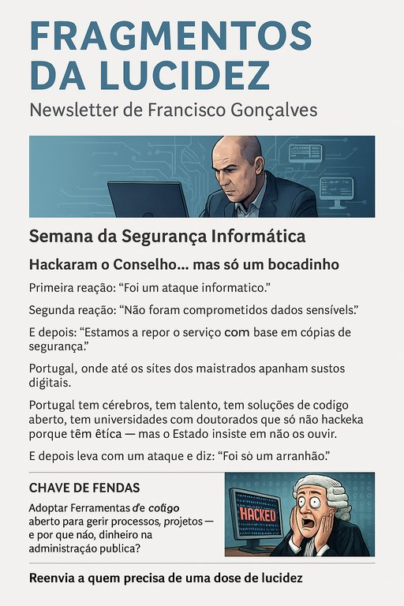

Publicado em 2025-06-28 17:55:54
Data: 29 de Junho de 2025
Esta semana, mergulhamos nas fragilidades gritantes da segurança informática em Portugal. O recente ataque ao site do Conselho Superior da Magistratura não é um incidente isolado, mas o reflexo de décadas de desinvestimento, falta de estratégias sólidas e ausência de cultura digital nas instituições públicas.
O episódio expôs mais uma vez a vulnerabilidade dos sistemas do Estado perante ataques banais, enquanto os responsáveis se limitam a declarações de ocasião: "não foram comprometidos dados sensíveis" — o mantra habitual para adormecer o cidadão.
Nesta edição, propomos medidas concretas para reforçar a cibersegurança pública e fomentar uma cultura de responsabilidade digital: auditorias independentes, planos de resposta a incidentes, e uma estrutura centralizada de coordenação tecnológica interinstitucional.
Porque a soberania digital é, hoje, um dos pilares da soberania nacional.
Recebeu este email porque subscreveu o boletim informativo do projeto FragmentosCaos.eu
Para sugestões ou recomendações, escreva-nos diretamente através da nossa página de contacto.